Family campervan tour · summer 2026
Northern Spain, the Pyrenees & the Mediterranean
Off the boat at Bilbao on Saturday 15 August, home from Calais on Monday 31st. An eastward arc: Basque beaches, two high-Pyrenees national parks, the French Med, then a run north to a day at Disneyland. Built around what we love — walking, beaches, good food, and things the kids will actually want to do.
One long arc, west to east, then north
No backtracking — we ride the coast, climb into the mountains, drop back to the sea, then head up through France. Colours mark the kind of leg.
- Basque coast
- 1Bilbao15 Aug · ferry in
- 2San Sebastián15–17 Aug
- High Pyrenees
- 3Torla-Ordesa17–20 Aug
- 4Espot · Aigüestortes20–22 Aug
- French Med
- 5Collioure22–27 Aug
- The run north
- 6Carcassonne27 Aug
- 7Millau viaduct27–28 Aug
- 8Disneyland Paris29–30 Aug
- 9Calais31 Aug · ferry home
Six legs, stop by stop
Each block is a base we settle into for a few nights. Nights are a starting point, not gospel — we can move a day between legs once we see how the kids are travelling.
Basque Country
15–17 Aug · 2 nightsLP p379Sea & foodFerry docks Bilbao · San Sebastián ~1 hr along the coast
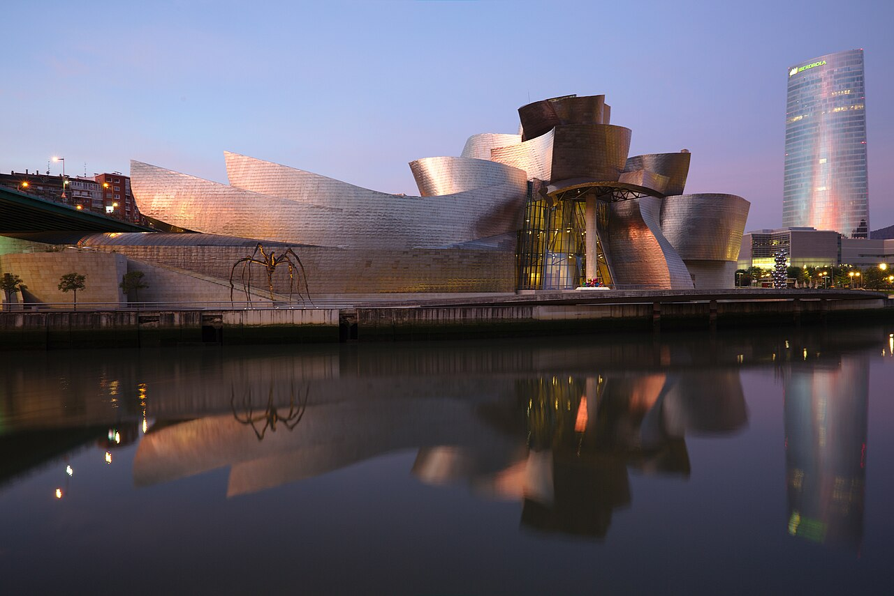
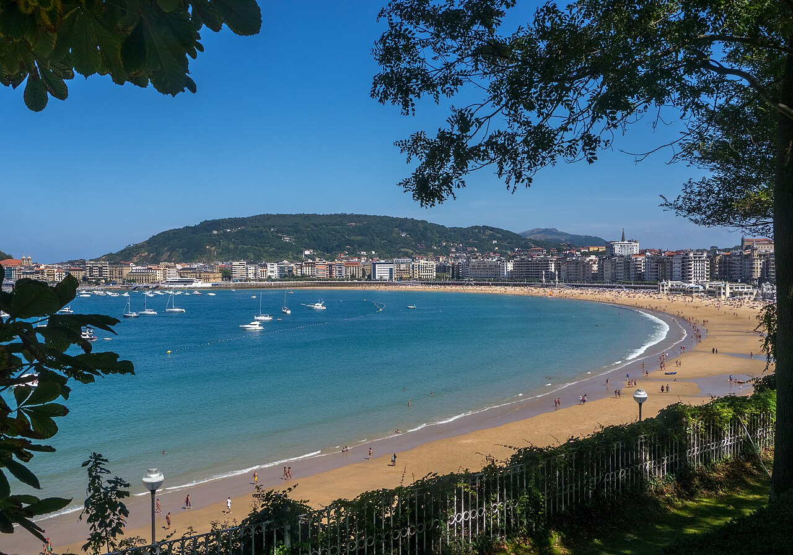
Why here: the softest possible start — two easy coastal cities an hour apart, straight off the ferry, to find our feet before the mountains.
What we'll do
- Bilbao: the Guggenheim — the swooping titanium building and the giant flower-dog "Puppy"
- San Sebastián: La Concha beach and the old funicular fairground up Monte Igueldo
For the kids
- Clifftop fairground with hand-cranked rides
- Gentle surf at Zurriola beach
- A pintxos crawl — order one, eat, move on (dinner as a treasure hunt)
Good food
- Spain's #2 food city: pintxos in the Parte Vieja, chilled txakoli
- Whole turbot grilled over coals at Getaria, down the coast
Where to stay
Campsites along the Basque coast between the two cities; book ahead for mid-August.
Optional detour — La Rioja (LP p398). Spain's premier wine country sits just south of here, roughly on the way toward the mountains. Bodega-hopping with architecture as striking as the wine — one lazy afternoon's worth if we fancy it.
Ordesa y Monte Perdido
17–20 Aug · 3 nightsLP p340Mountains~3.5–4 hr drive down to Torla · base in the valley
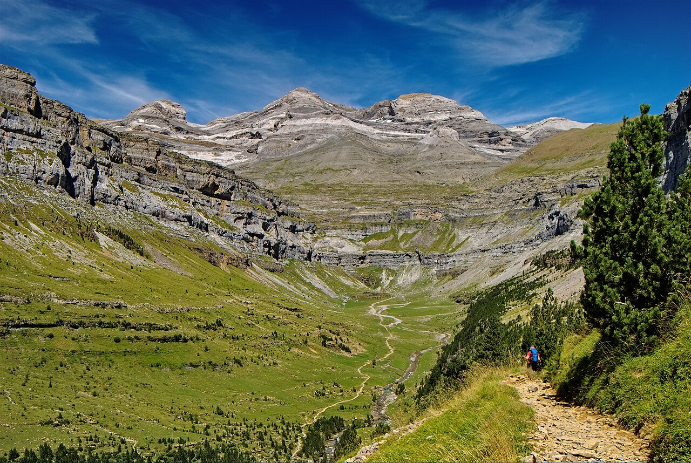
Why here: the Pyrenees' most spectacular valley — a huge glacial amphitheatre of waterfalls and striped cliffs, with flat, easy trails along the river floor that suit small legs.
What we'll do
- The Ordesa valley walk toward the Cola de Caballo waterfall
- Past the Gradas de Soaso cascades — turn back whenever we've had enough
- The flat lower river section is glorious and pram-gentle
Bigger walk?
- Refugio de Góriz is the classic overnight
- ~800 m of climbing though — a real stretch for a 7-year-old (see Decisions)
Van logistics
No private vehicles into the valley in August — park at Torla and take the shuttle bus to the trailhead.
Where to stay
Camping Río Ara or Camping Ordesa around Torla / Broto. Ternasco (mountain lamb) for dinner.
Aigüestortes & Sant Maurici
20–22 Aug · 2 nightsLP p308Mountains~3 hr of gorgeous mountain driving east · base at Espot
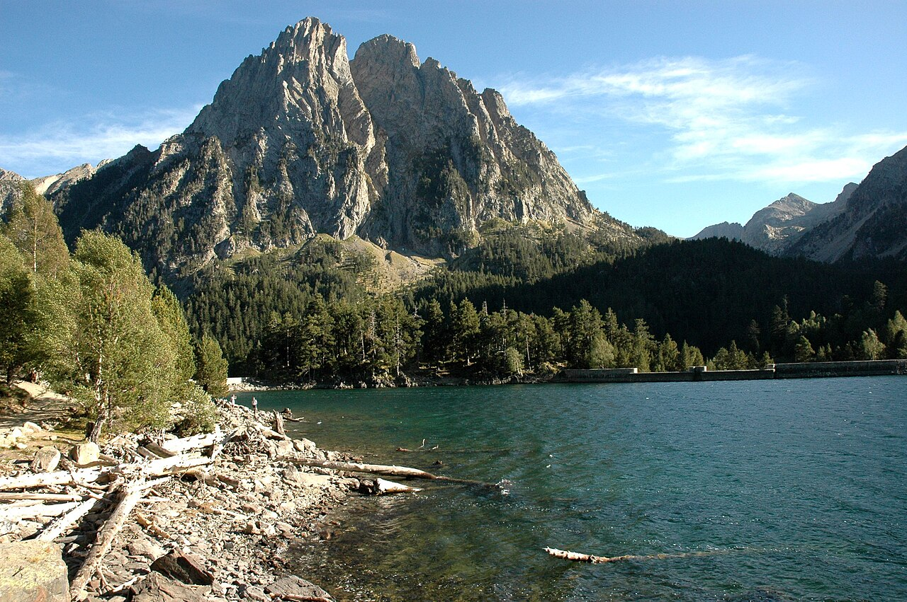
Why here: a different kind of mountain — turquoise glacial lakes ringed by pine and jagged peaks, reached by jeep so the walking stays short. A cool escape if the plains are baking.
What we'll do
- 4×4 jeep-taxi from Espot to the Estany de Sant Maurici, the twin Encantats peaks behind it
- Easy loops around the lakeshore for all four of us
For the kids
- The bouncy jeep-taxi ride is half the fun
- Cool, clean mountain air and lakes to skim stones on
Bigger walks
Home of the Carros de Foc refuge circuit — proper hut-to-hut country to file away for a future trip.
Where to stay
Campsites around Espot; walk or jeep into the park core. Val d'Aran (LP p310) is next door — a winter-ski idea, not this trip.
French Mediterranean
22–27 Aug · 5 nightsBeach & unwind~2.5–3 hr over the border to the coast · base near Collioure / Argelès
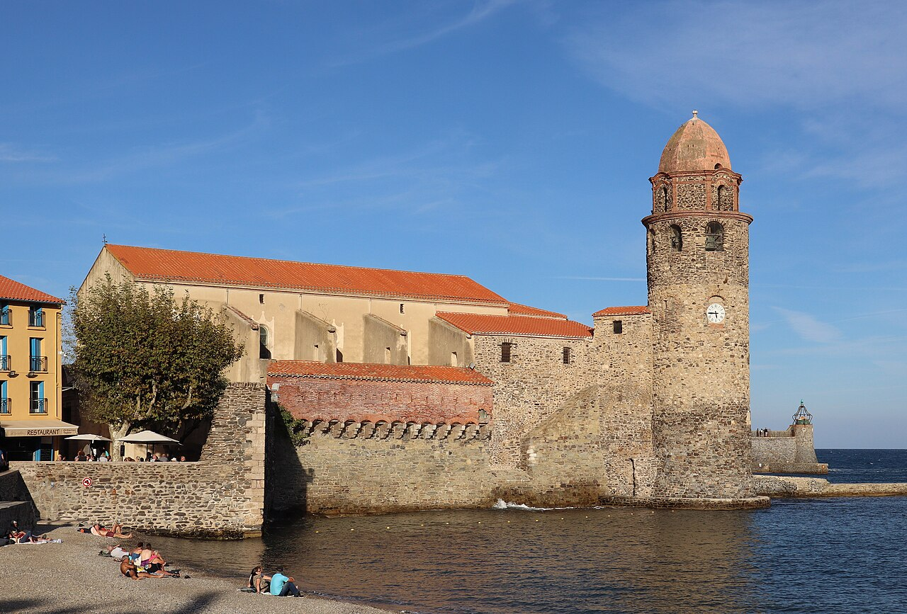
Why here: the payoff after the mountains — the most "south" the trip gets. Five nights to properly unwind on the sheltered coves of the Côte Vermeille, with long family beaches next door.
What we'll do
- Collioure: a jewel of a Catalan town — coves, a waterfront castle (a fortress, not a church), anchovies everywhere
- A boat trip along the Côte Vermeille
For the kids
- Long sandy beaches at Argelès — one of Europe's most family-geared camping stretches
- Beach mornings, siesta, late dinners — proper holiday rhythm
Good food
- Seafood and the famous Collioure anchovies
- A taste of sweet Banyuls wine down the coast
Where to stay
Big family campsites around Argelès-sur-Mer — the busiest to book, so lock it in early.
Just over the border — the Costa Brava. The Catalan coves you logged sit right below Collioure. Easy to fold in a day on the Spanish side, or base there instead if we'd rather have Spanish prices and quieter beaches.
The run north
27–29 Aug · 2 nights en routeOn the road~8–9 hr to Paris, kept short — two nights, two easy days
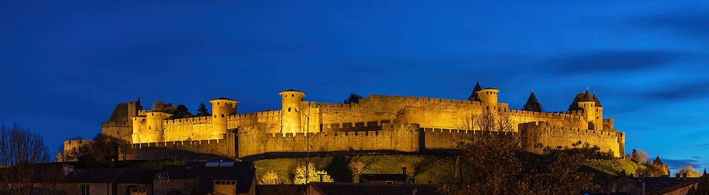
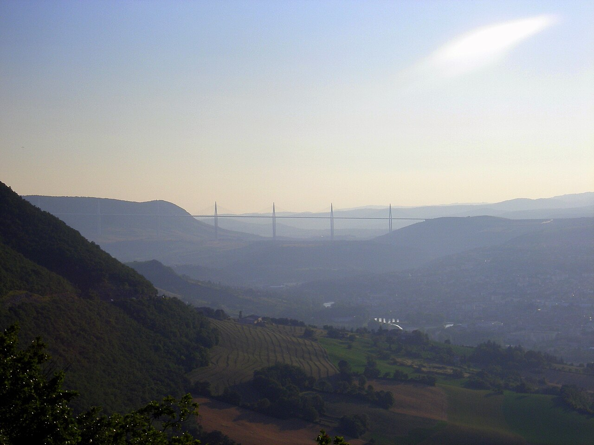
Why here: the long drive north made into the fun part — two show-stoppers on the way to Paris that turn a slog into an adventure, kept to two easy days.
What we'll do
- Carcassonne: a fairytale walled citadel ~1½ hr from the coast — the castle the kids will remember
- Millau viaduct: the tallest bridge in the world — viewpoint below first, then drive across the top
For the kids
- The Tarn gorges below Millau — swimming and canoeing to break the drive
- Walking the ramparts of a real castle
Where to stay
A night around Millau, then a second hop up through Burgundy or the Loire to within an hour of Disney.
Worth a stop — Guédelon (Burgundy). A real 13th-century castle being built from scratch by hand — masons, blacksmiths, carpenters and cart horses using only period tools and materials (a genuine experimental-archaeology site, not a film set). Near Treigny in the Yonne, ~2 hr from Paris, so it drops neatly into the second half of the drive. A proper half- or full-day and brilliant for the kids — mud, cart horses, workshops and stone-carving from age 6. 2026 season runs early April to late October; ~€19–21 adults, €13–15 for 5–17s, under-5s free. No wi-fi on site, so download tickets first, and take the English guided tour. A castle being built by hand pairs rather nicely with the finished fairytale one at Carcassonne.
Disneyland & home
29–31 Aug · 2 nightsBig finishPark near Marne-la-Vallée · ferry from Calais Monday 31st
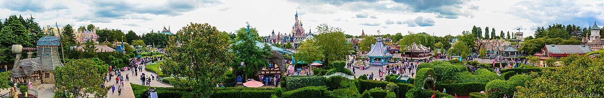
Why here: the carrot that pulls everyone through the drive north — one big magical day to end on before the ferry home.
What we'll do
- A full day at Disneyland Paris on the 30th — the two parks, castle and rides
- At the gates for opening to beat the mid-August queues
Getting home
- ~3 hr Disney → Calais on the 31st for the crossing back
Where to stay
A pitch near the parks the night before, so we're first in.
Worth deciding
One day at Disney, or two? See the decisions below.
A couple of nights off the van, all-inclusive
Since we've pushed the balance south, it's worth having a proper beach base lined up — for a family of four (kids 7 and 10). True all-inclusive (meals and drinks) is rare in France; the French equivalent is the club model — half/full board plus kids' clubs and pools. Spain does proper all-inclusive far more cheaply, and the Costa Brava starts about an hour south of Collioure. The trade-off in Spain is proximity vs scale.
| Option | Where | Format | Best for | |
|---|---|---|---|---|
| FR1 · Belambra "Les Ayguades" | Gruissan | ★3.3 (628) | Club, half/full board | Slots into the route; beach + kids' clubs |
| FR2 · Belambra "Les Salins" | Port Camargue | ★4.0 (1,030) | Club, premium | Best-rated French option; new, big pools |
| FR3 · Club Med Opio | Opio, Provence | ★4.1 (2,620) | True all-inclusive | Full drinks-included experience (off-route) |
| ES1 · Cala Montjoi | Roses | ★4.4 (3,784) | Holiday village | Outdoorsy families; closest + prettiest |
| ES2 · Hotel Spa Mediterráneo Park | Roses | ★4.5 (2,302) | Hotel, semi-AI | Proper hotel near the border, 3 pools |
| ES3 · Golden Bahía de Tossa | Tossa de Mar | ★4.5 (3,436) | Full all-inclusive | Waterslides + a genuinely pretty town |
🇫🇷 France — the club model
FR1 · Belambra "Les Ayguades"
An active family club on a big sandy beach with good kids'/teens' clubs (3–17) — and it slots neatly into the route, ~1 hr from Collioure, ~45 min from Carcassonne. Reviewers find the site a touch dated, which drags the score.
Heads-up: kids' clubs run during French school holidays only — our late-August dates should fall inside them, but confirm the end date.
+33 4 68 75 17 17 · belambra.fr
FR2 · Belambra "Les Salins"
The best-rated French pick — brand new (2022) with three pools and shallow, kid-friendly beach water. Pairs well with a Rhône-valley route north (Pont du Gard as a bonus) rather than the Carcassonne/Millau line.
Heads-up: pricier tier and a detour east of our drawn route; a few find rooms small. Bring mosquito repellent.
+33 4 66 80 00 10 · belambra.fr
FR3 · Club Med Opio en Provence
The genuine all-inclusive — meals, drinks, shows, flying trapeze and kids'/teens' clubs from 4 months. A stunning setting with praised food and activities the kids love.
Heads-up: well off the northward route — only sensible if we finish on the Côte d'Azur. Brand premium.
+33 4 93 09 71 00 · clubmed.com
Also considered — Belambra "Les Rives de Thau", Balaruc-les-Bains (★3.8, 1,499): a spa-town setting on the Thau lagoon rather than open beach.
🇪🇸 Spain — the Costa Brava
ES1 · Cala Montjoi, Roses
A holiday village tucked in a cove inside the Cap de Creus natural park — buffet dining, kids' clubs, its own diving school and hiking straight from the door. ~1 hr south of Collioure, the closest and prettiest, with the legendary elBulli site hidden in the same bay. Families return year after year.
Heads-up: a rocky cove rather than a big sandy beach, and the water runs cooler this far north — more nature-retreat than resort.
+34 972 25 62 12 · montjoi.com
ES2 · Hotel Spa Mediterráneo Park, Roses
A proper hotel close to the border — three pools, a shin-deep kids' pool with a slide, a kids' club running late, and a good buffet. Spotless, spacious and well-staffed.
Heads-up: the "all-inclusive" really only covers drinks at breakfast — check exactly what the package includes. Crowd skews older and quieter.
+34 972 25 63 00 · hotelsmediterraneo.com
ES3 · Golden Bahía de Tossa & Spa
Genuine all-inclusive with pirate-ship waterslides, a big entertainment team and a spa — set beside the walled medieval town of Tossa (a castle right on the beach, not a church). Praised for its hard-working animation, cleanliness and relaxed feel, ~10 min walk from the beach.
Heads-up: the furthest south (~2.5 hr past the border) — the biggest dip off-route. Short beds and weak Wi-Fi.
+34 972 34 31 30 · goldenhotels.com
Also considered — Hotel Panorama, L'Estartit (★4.3, 2,148), superb for Medes Islands snorkelling with an in-house dive centre; Rosamar Garden Resort, Lloret de Mar (★4.0, 3,712), cheap full-AI with a splash park but in a busy party town.
- Mid-August is peak — the busiest fortnight in Europe. Book early and check minimum-stay rules; some clubs prefer week-long bookings in high summer, which can make a two-night stay tricky.
- French clubs tie kids'-club operation to French school holidays — our dates should qualify, but confirm the end date.
- Routing — the Costa Brava sits just below Aigüestortes, so a Spanish resort slots in after the mountains without backtracking. It could even replace the Collioure/Argelès leg if we'd rather spend the beach days on the cheaper Spanish side.
- Ratings and review counts are Google, captured July 2026 — they drift, so re-check when booking.
Decisions to make together
The plan holds together as-is, but these are the real forks in the road. Worth a chat over dinner before anything's booked.
Picos de Europa — in or out? LP p412
The guidebook's top outdoor pick — kayaking down the Río Sella and walking past high mountain lakes, right up our street. But it's ~2.5 hr west of Bilbao, the wrong way for a Pyrenees-then-Med trip. Skip it this time, or swap it in and give up a chunk of the French Med?
Both mountain parks, or just Ordesa?
Two back-to-back mountain moves is the most tiring stretch with the kids. Ordesa is the more jaw-dropping of the two if we want to cut one and slow down.
A real hut night, or day-walks with a bail-out?
Sleeping in a mountain refuge is a brilliant idea and a big ask for a 7-year-old. Safer bet: day-hikes to a refuge and back, with the overnight as a "if the weather's perfect" bonus.
How many pure beach days?
We've pushed the balance south — five nights on the Med, and the run north squeezed to two. That's the most downtime we can carve out after the mountains. Trim a night only if the drive north feels rushed.
Disney: one day or two?
One day fits the schedule; a second means cutting a night somewhere earlier. Depends how much the kids build it up.
Everything we shortlisted
The picks we logged from the guidebook, with page numbers so we can flip straight to them — the ones on or near this route.
On or near this route
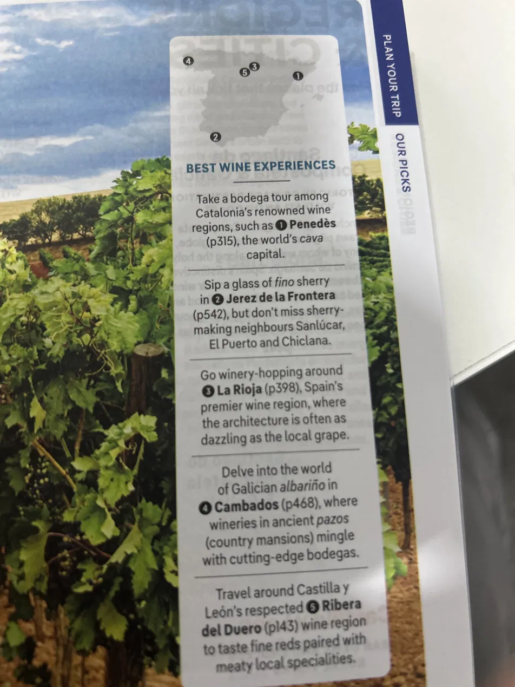
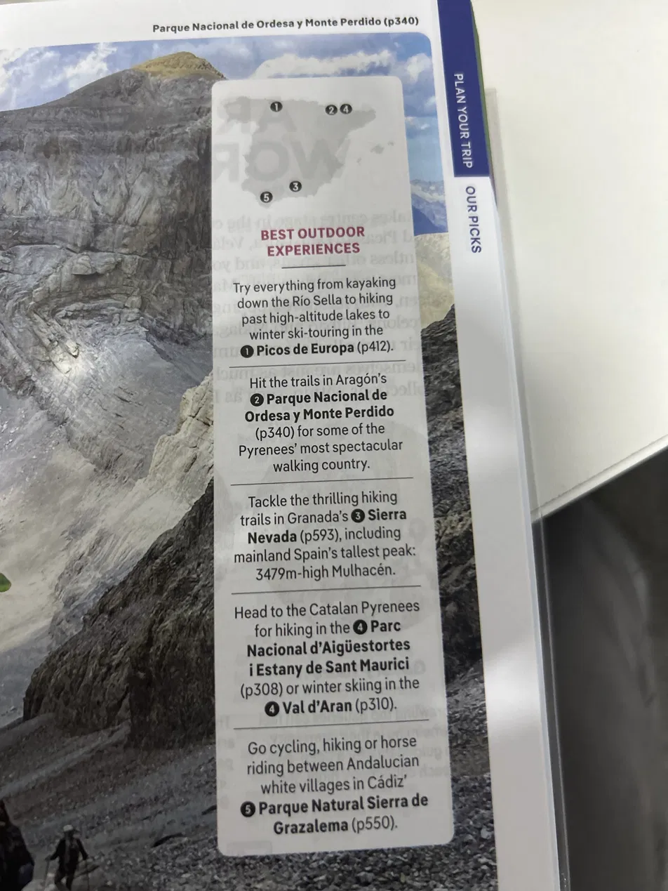
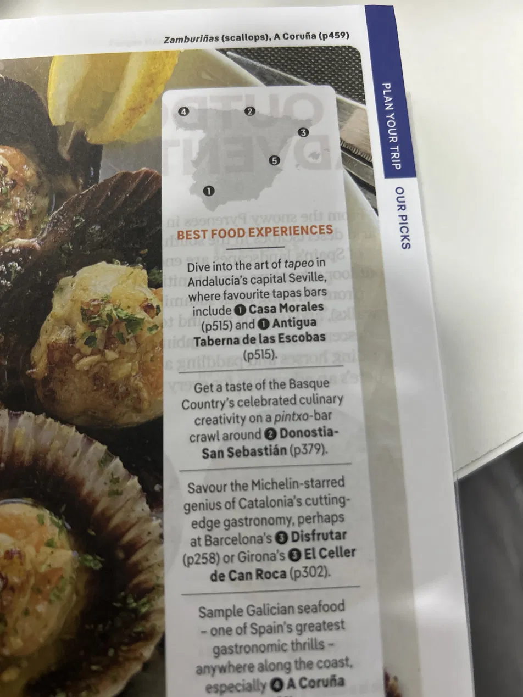
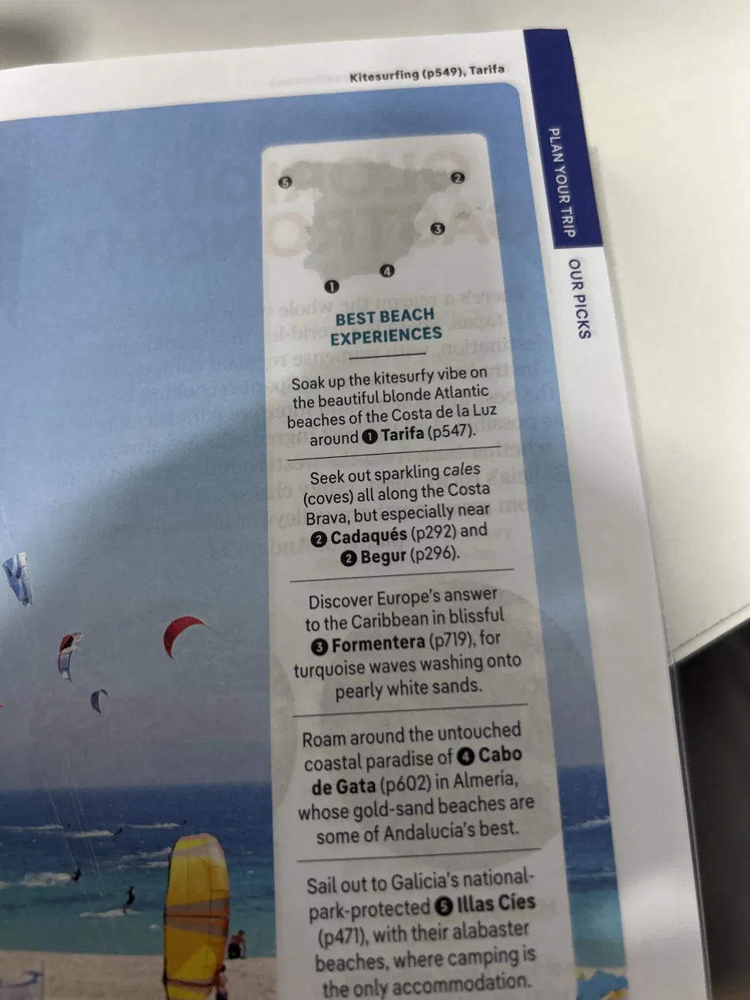
Page numbers refer to the guidebook. These are the four "Best … Experiences" spreads that fed the shortlist above.
Two guidebook routes worth raiding
Two more Lonely Planet itineraries that overlap ours — the North Coast Explorer and the Catalan Coast & Pyrenees. Here are the best bits we haven't worked in yet. Nothing here is in the plan — some could slot in with a day's shuffle, the rest is the seed of a future Spanish trip.
Catalan Coast & Pyrenees — could slot in
North Coast Explorer — a whole other trip, west
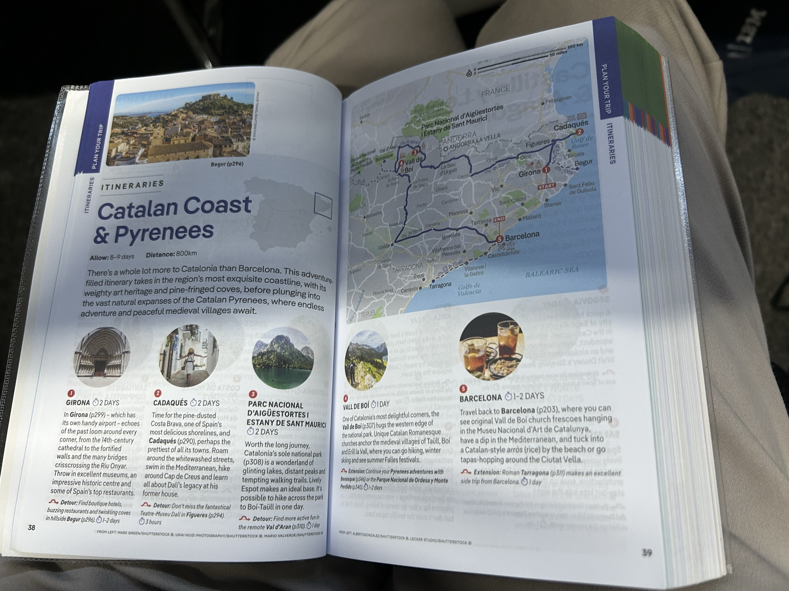
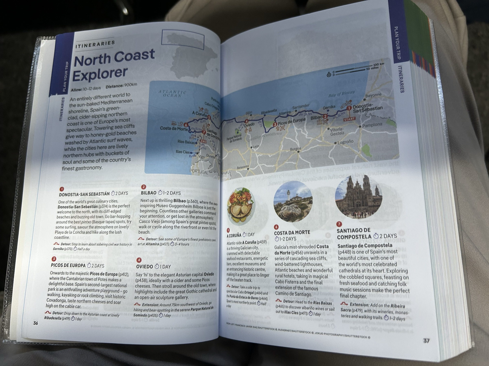
Tap a spread to read it full-size. None of this is in the itinerary yet — it's the list for shuffling a day, or the next trip.
Friends who know these coasts
Alex and Anna have done the northern coast and the Costa Brava — they're putting a proper list together. These are the early headlines; more to drop in as it comes.
Their spot for tapas — work the pintxos bars through the Parte Vieja old town. (Leg 1.)
Go here for the seafood — the standout on the north coast, Santander eastward.
More north-coast (Santander east) and Costa Brava highlights to come once Alex & Anna share the full list.
Before we book
Mid-August is the busiest fortnight in Europe — the good pitches and the ferries go early. Tap an item to tick it off (just for this view; it won't save).
- Book campsites for every leg now, especially Argelès and the Disney pitch
- Confirm 2026 vehicle-ban dates and shuttle / jeep times for Ordesa and Aigüestortes
- Buy Disneyland tickets and a pitch near Marne-la-Vallée for the 29th